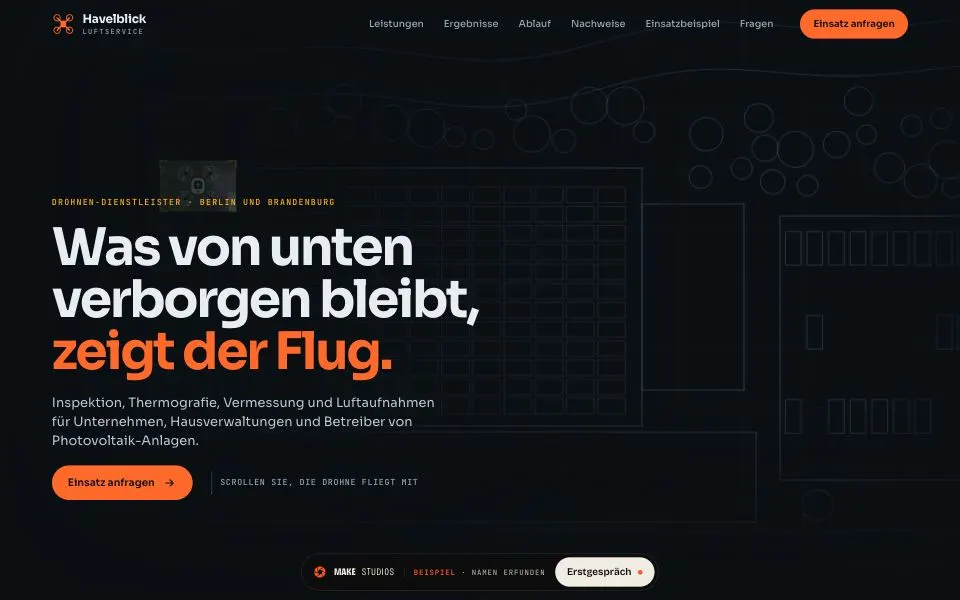
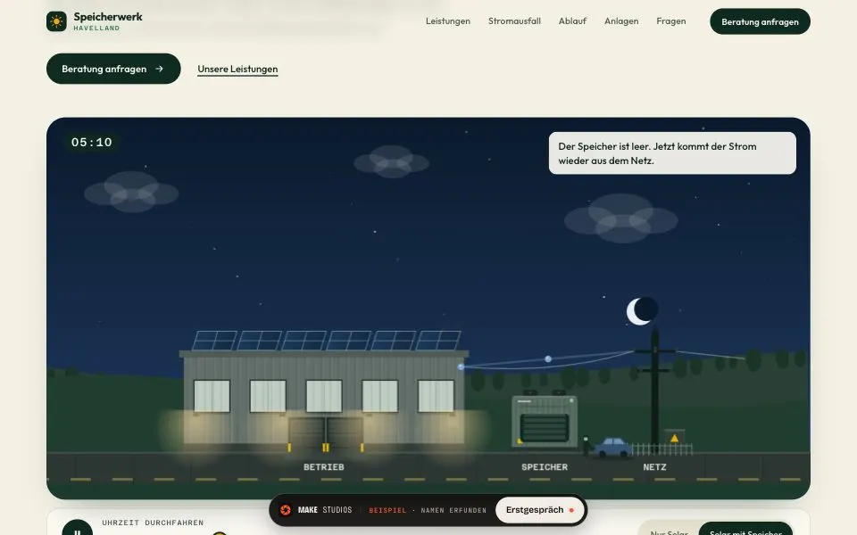
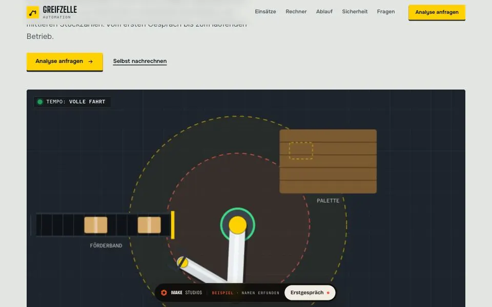

Technik · Drohnen
Ein Drohnen-Dienstleister, der seine Arbeit erlebbar macht. Beim Scrollen fliegt eine Drohne in Streifen über eine Anlage, und man wechselt zwischen Luftbild, Wärmebild und Vermessung. Ergebnisse, Nachweise und Anfrage folgen.
So ist sie gebautBeispielseite Havelblick Luftservice öffnen

Technik · Solar und Speicher
Ein Fachbetrieb für Solaranlagen und Batteriespeicher, der Technik erklärt, statt sie zu behaupten: Man fährt einen Tag mit einem Regler durch, sieht, wann erzeugt, verbraucht und gespeichert wird, und legt selbst fest, was bei einem Stromausfall weiterlaufen soll.
So ist sie gebautBeispielseite Speicherwerk Havelland öffnen

Technik · Robotik und Automatisierung
Ein Anbieter von Roboterzellen für den Mittelstand, der die Technik begreifbar macht: Man bedient eine gezeichnete Zelle, stellt die Aufgabe um, schickt eine Person in den Arbeitsbereich und sieht, wie der Arm bremst. Dazu ein Rechner, der nur mit den eigenen Zahlen der Besucher rechnet.
So ist sie gebautBeispielseite Greifzelle Automation öffnen